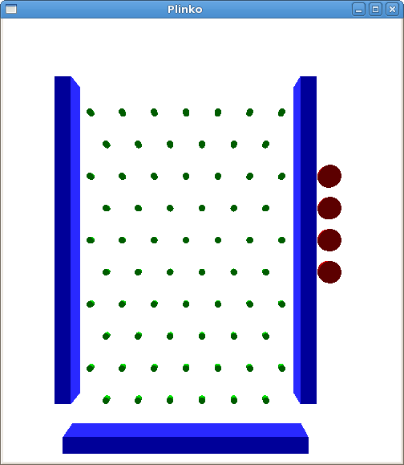
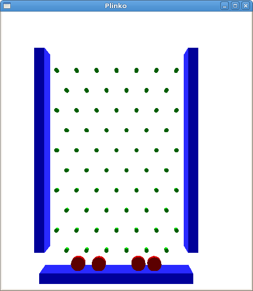

Simple plinko is a very (very (very (very))) simple implementation of the popular game "Plinko" from The Price is Right. If you haven't seen it, take a look at this video starting at about one minute.
The basic premise is simple. A number of flat discs are dropped onto a large board covered in small pegs. The disc bounces off these pegs as it drops down towards the bottom of the board. The bottom of the board catches the discs and different scores are assigned based on the location that the disc lands.
The player is given 4 game discs to try and score maximum points. Once released, the disc cannot be grabbed again.
At the beginning of play, the four discs are stationary to the right of the game board.
Game control is through the mouse. Drag any of the four plinko discs to the area above the game board. Release the disc and it will begin falling to the bottom of the board. Reset the game with the "r" key.
My goals for the Plinko game were as follows:
Implenting the project in Python posed several challenges. For one, there is significantly less literature about coding OpenGL applications in Python. Fortunately, the majority of the PyOpenGL calls are simple wrappers around the C calls, and those that aren't follow a reasonable standard of multiple return values translated to Tuples.
For example, the OpenGL call glScalef is unchanged in PyOpenGL, while the OpenGL call gluUnProject is changed significantly. In C, this function takes nine parameters. Three doubles to represent the window coordinates, pointers to the model, projection and view matrixes, and three pointers to doubles to store the resulting world coordinates. In PyOpenGL, this function takes three floating point numbers to represent the window coordinates, and returns a Tuple containing the world coordinates. The three matrices are optional (they are filled in for you if not defined).
The collision detection system proved simple. Because the pegs and discs are both cylinders and they exist within the same Z plane, I can use the sphere collision algorithm to determine if they collide. The walls are similarly easy, as they use the same collision algorithm, but the range of collisions is much higher.
The gravity simulator was also fairly easy, but getting to not look choppy and erratic took some patience. Eventually I settled on a constant downward force applied every frame, and a velocity reduction after each collision (so that collisions wouldn't be perfectly elastic) that results in the disc moving inexhorably towards the bottom, but the final X coordinate of the disc is not obvious.
To implement moving object around in a Perspective projection, I used a couple of functions (gluUnProject and gluProject) to handle the finer aspects of converting from window to world coordinates and back. These functions aren't very well documented, but this site was rather helpful in deciphering them.
General PyOpenGL notes can be found at the PyOpenGL Documentation site
I can't provide executable code.
Well...I could but I'm far too lazy to figure out the finer aspects of compiling python to executable code. But there is good news for you folks looking to execute my code. I have every intention of putting the code for this project into a public repository somewhere. You're welcome to track it down, but remember Cal Poly's rules regarding cheating.